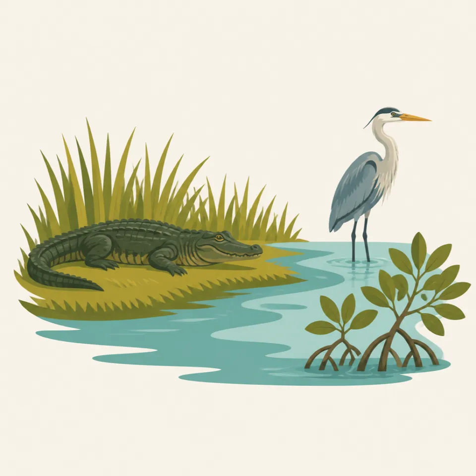
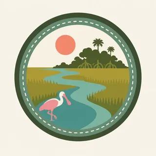

01
Sawgrass Prairie
A wide, shallow, living plain where water threads through grass so slowly that the river feels almost hidden in sunlight.
TrailMark Archive Edition
Florida | River of Grass
Water moves almost invisibly through sawgrass, mangrove, marl prairie, and open sky, carrying one of North America's most intricate wetland stories.
Archive No. TM-EVG-003
National Park since 1947
Collection Southeast Parks
Park Overview
Everglades is not a swamp in the ordinary sense; it is a broad, shallow wetland where freshwater and saltwater meet across limestone. Plants, animals, and seasonal rainfall shape it into one moving system.
The park protects the southern reach of a much larger watershed. Its story begins far north of the boundary, where water once flowed slowly from Lake Okeechobee through sawgrass plains toward Florida Bay.
TrailMark treats Everglades as the third proof park because it asks the template to honor subtlety: flat horizons, hidden movement, heat, insects, ecological dependence, and conservation rather than only dramatic vertical scenery.
Emotional Thesis
Everglades does not announce itself through cliffs or peaks. Its scale is horizontal: sky, grass, water, birds, heat, and the long shimmer of distance.
The deeper wonder comes when the eye slows down. A ripple becomes an alligator, a white shape becomes a wading bird, and a nearly still sheet of water begins to read as a river.
Landscape Highlights
01
A wide, shallow, living plain where water threads through grass so slowly that the river feels almost hidden in sunlight.
02
A tidal edge of roots, channels, brackish water, and shelter where land and sea negotiate every day.
03
A close, accessible window into alligators, turtles, fish, and wading birds, where stillness often becomes sudden life.
Wildlife
Everglades supports alligators, crocodiles, manatees, turtles, fish, herons, egrets, spoonbills, ibis, ospreys, and the endangered Florida panther within a web of freshwater, brackish, and coastal habitats.

01
Wildlife viewing is often best in the dry season, when water levels concentrate animals near remaining channels and ponds.
02
Alligators and crocodiles should be given space; their stillness is not an invitation to approach.
03
Bird activity can change quickly with water depth, heat, wind, and the time of day.
Geology
Everglades geology is quiet but decisive. Porous limestone, shallow elevation changes, marl soils, peat, sea level, and freshwater flow determine where sawgrass, slough, hammock, mangrove, and bay can exist.
01
The park is shaped by slight elevation differences rather than mountains; a few inches can change habitat.
02
Limestone and marl influence water chemistry, plant communities, and the open character of many prairies.
03
Sea-level rise and saltwater intrusion make the coastal edge especially important to the park's future.
Cooler air, fewer mosquitoes, lower water, concentrated wildlife, and clearer walking conditions make this the most accessible season.
Heat, storms, high water, insects, and lush growth return the park to a more humid, powerful, and less predictable mood.
Bird movement and shifting water levels bring transitional energy, especially around open wetlands and coastal edges.
Cloud build-up, mirrored water, and sudden brightness can turn the flat horizon into a dramatic study of weather.
Photography Guidance
Everglades photography is often about restraint. Instead of chasing a single grand landmark, look for layers: reflected sky, grass texture, bird posture, reptile stillness, and the edge between water and land.
01
Use cooler light and calmer water for reflections, birds, and boardwalk wildlife before heat intensifies.
02
A longer lens helps keep respectful distance from birds, alligators, crocodiles, and nesting areas.
03
From canoe or kayak routes, protect gear from water and compose slowly; low perspective can make the wetland feel immersive.
Field Notes
Everglades asks for a different kind of attention: not awe at height, but reverence for flow, heat, wingbeats, hidden water, and the fragile patience of a living wetland.
TrailMark Archive Journal

Badge Story
The Everglades badge uses the archive green system to preserve a landscape defined by low horizons, wetland life, and ecological connection.
Green tones suggest sawgrass, hammocks, and the park as a living water-shaped system.
The circular badge format turns a flat, expansive landscape into a collected field mark without forcing false monumentality.
As the third archive badge, Everglades proves TrailMark can honor subtle ecological wonder as carefully as mountains and geysers.
Archive No.003
LocationRiver of Grass
ReleaseThird Archive Mark
Stewardship / Safety
Everglades safety is practical and ecological at once. Sun, humidity, mosquitoes, storms, shallow water, wildlife distance, and restoration awareness all shape a respectful visit.
Bring sun protection, water, insect protection, and patience; conditions can feel intense even on short walks.
Keep distance from alligators, crocodiles, birds, and nesting areas, especially along boardwalks and water routes.
Check paddling, weather, tide, and storm conditions before entering remote water trails.
Stay on durable routes and respect closures; wetland vegetation and nesting habitat can be easily damaged.
Current conditions, fees, and alerts are on the National Park Service site.
Continue the Archive
The TrailMark collection grows stronger when each park keeps its own pace, atmosphere, and way of teaching visitors to notice.